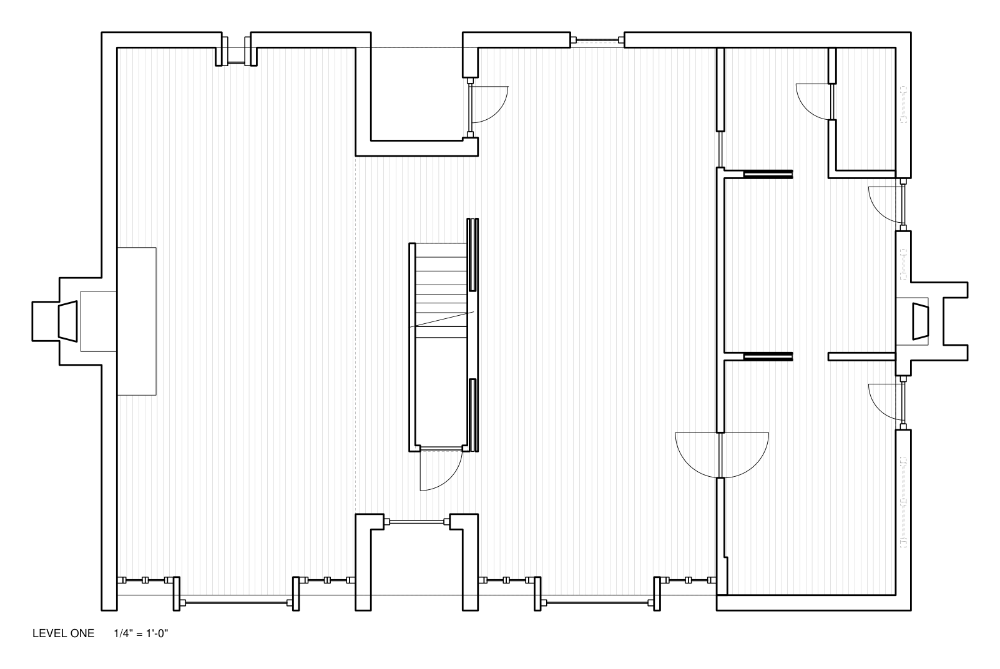
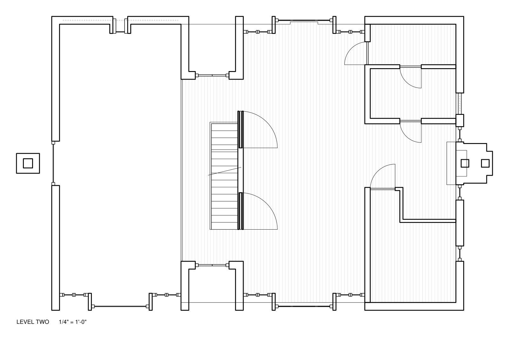
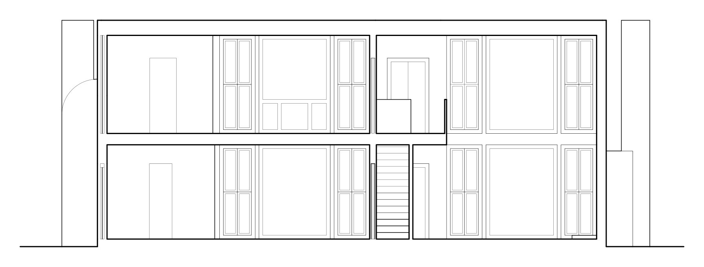
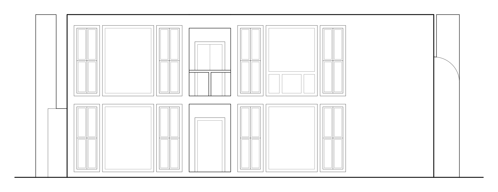

Project 04
Esherick House
Plans, section, and elevation of the Esherick House
Plans, a section, and an elevation of Louis Kahn's Esherick House, drawn for ARCH 2112 Visualization.
Plans


Section and Elevation

